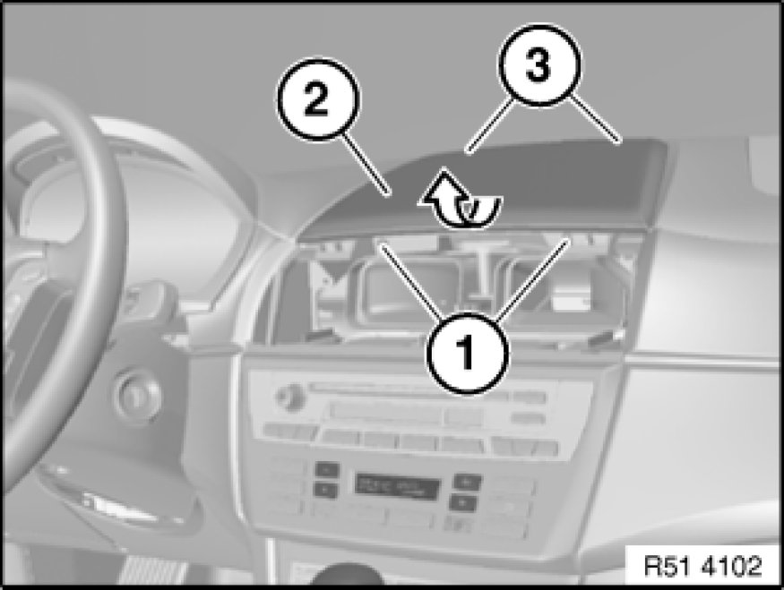

51 45 ... - Removing and installing storage tray in instrument panel
51 45 ... - Removing and installing storage tray in instrument panel

Necessary preliminary tasks:
- Remove center fresh air grill Removing and Installing/Replacing Center Fresh-Air Grill

Release screws (1).
Feed storage tray in instrument panel (2) in direction of arrow out of upper guides (3) and remove.